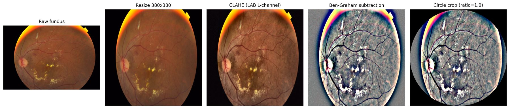

From a single decision to evidence you can act on.
Inverse AI follows one loop, whether the model grades an eye scan, answers a question, or reads a document with images in it.
Six steps. Nothing is taken on trust.
Decide
The model returns an output: a grade, an answer, a refusal. It is recorded with its input and the exact model version.
Explain
Several explanation methods attribute the decision to parts of the input (pixels, tokens) or to internal features of the model.
Check
Each explanation is scored. For images, does the credit fall inside the region that can carry evidence? Across methods, do they agree? A map that fails is reported as failing.
Published method: Sight
Intervene
If behaviour needs to change, a steering edit is applied at runtime. The weights stay fixed, and the edit is written up as a STEER card.
In research: Steer
Verify
The change is measured against the untouched model and against a strong alternative, and its cost is counted. A gain that doesn’t survive the comparison is reported that way.
Monitor
In production, decisions, explanations, and interventions are tracked for drift, fairness, and audit, and the loop starts again.
Builds on the founder’s MLOps research
Every intervention, described the same way.
Steering results are hard to compare because they are reported differently. A STEER card fixes the format, so two interventions on two different models can be read side by side.
One fundus photograph, end to end.
In Sight, a retinal image is pre-processed, graded, explained twice, and then scored only inside the retinal disc, so credit that spills onto the black border doesn’t count.
- Fundus image
- Pre-process
- Grade
- Grad-CAM + SHAP
- Retinal mask
- Report

The platform, layer by layer.
The system is designed as six services. The repositories are set up, and the build is starting from the published methods.
Data layer
Datasets, masks, and annotations, versioned alongside every model and result.
Model serving
Hosts the models under study, with hooks into their internal activations.
Explanation tools
Attribution methods and the scoring that checks them.
Intervention engine
Applies steering edits at runtime and records each one as a STEER card.
Monitoring
Drift, fairness, and audit dashboards with alerting.
API and dashboard
One interface for engineers, reviewers, and auditors.
See the research behind each step.
Every step in the loop maps to published or ongoing work.